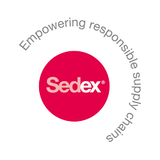

Homepage / About Us- jute material suppliers & canvas bag company selling reusable environmental shopping bags/
About Us- jute material suppliers & canvas bag company selling reusable environmental shopping bags
SARA INTERNATIONAL is Registered member of
Federation Of Indian Export Organisation(FIEO) Export Promotion Council for Handicrafts (EPCH) Ministry of M, S and M Enterprises (MSME)SEDEX Member
Sara International
Sara International Registered Under FIEO
Sara International Registered Under MSME
VAT Number: 19572264047
GST Number: 19ACTFS3031JZO
We have a substantial and magnificent collection of jute and
cotton products to suit every occasion, every aura for every age
group. On top of it our products are ‘Eco Friendly’,
‘Multipurpose’, ‘Reusable’ and ‘Fashionable’ and above all
‘AFFORDABLE’.
Having a team of efficient and dedicated workers we produce a wide
variety of Fabrics, Bags, Room Slippers and Scarves from fibers
like jute and cotton. We manufacture customized products as per
our customers’ requirement. We are also jute material supplier.
SARA INTERNATIONAL having a factory under development of area
25000 Sq. Ft. looks forward to grow exponentially in 5 years. With
investments and projects in all horizons.
All our products are in strict allegiance to quality standard and
policies.
Our team comprises a mix of young and dynamic individuals and on
the other hand.
Over the years we have created a niche for our organization and
developed the belief among our vendors and customers by delivering
performance and quality product services.
Why Us and Our Products?
As people all over the world become aware about the importance of protecting the environment and using green products, the demand for them has become increasingly higher. Standing on today’s competitive platform we help you to keep our environment clean and green by our environmental & eco-friendly products at a reasonable cost. If we use eco-friendly reusable products of jute and cotton instead of using materials like plastic, synthetic, or artificial products, we put our efforts and protecting the environment and show concern for our future generation. As a jute & canvas bag company we sell environmental shopping bags made of reusable bag material. We continue to maintain our reputation as one of the top jute material suppliers.
• Exclusive packaging as per customer requirements.
• Cotton Canvas Bags
• Jute Shopping Bags
• Wine Bags
• Promotional bags
• Shopping bags
• Cotton Bags
• Grocery Bags
• Tote Bags
• Drawstring Bags
• Packaging Bags
• Jute Hotel Room Slippers
About Management
Saket Agarwal
Saket Agarwal having worked with several Multinational companies
and lived in countries in Europe, Middle East, South Africa and
New Zealand having attained global outlook. He is a Chartered
Accountant, Company Secretary a Commerce graduate with
International Business Diploma. An innovator and believer in
game-changing businesses of the future, Saket is known for
challenging conventional wisdom and spotting opportunities
quickly. His vision and leadership in ushering the growth of
business of Sara International is tremendous.
By his path-breaking initiatives, understanding client needs and
delivering what the customer needs he is driving Sara
International to be customer’s first choice. He sees a huge
opportunity in transforming the packaging industry by making them
eco-friendly and environment conscious with use of sustainable
packaging products.
Saurav Agarwal
Saurav Agarwal is shaping Sara International’s strategic vision
and now plays the role of Strategic Developer. He is a Chartered
Accountant and an International business developer. Having worked
with various Export companies and infra companies.
Under his leadership, Sara International is achieving tremendous
growth both organically and inorganically, creating a diversified
portfolio of products. Saurav chooses to focus on Sustainable
Development of our organisation. He initiated the creation of
organisation on his personal philosophy which is – “its ok
to rejoice success but it is more important to heed the lessons of
failure”
We take pride in our being global entity. Our belief in inclusiveness for long-term sustainable growth and economic prosperity evokes trust among consumers, employees, suppliers, partners and the community.
The Team consists of young and dynamic people. There are not merely people who work for Sara International, they are our foundation.
“We believes in long term relationship” is Sara International’s
Motto.
We derive our motto through Honesty, Integrity, Responsibility,
Ethical Practices and Customer Satisfaction.
So to place an order for our amazing range of products, please feel free to contact us.